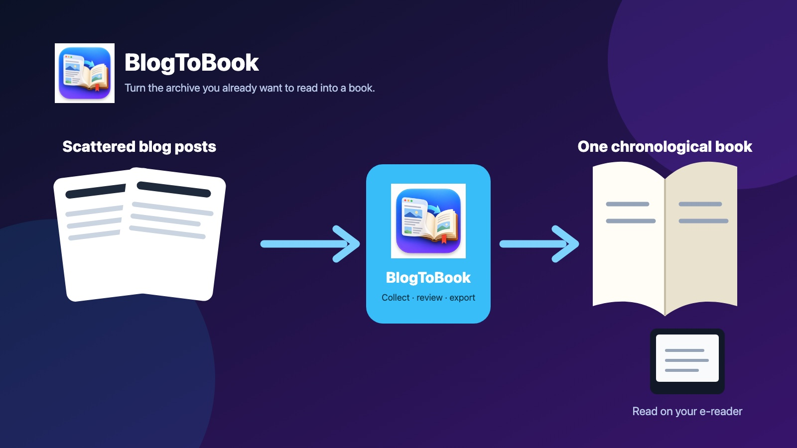
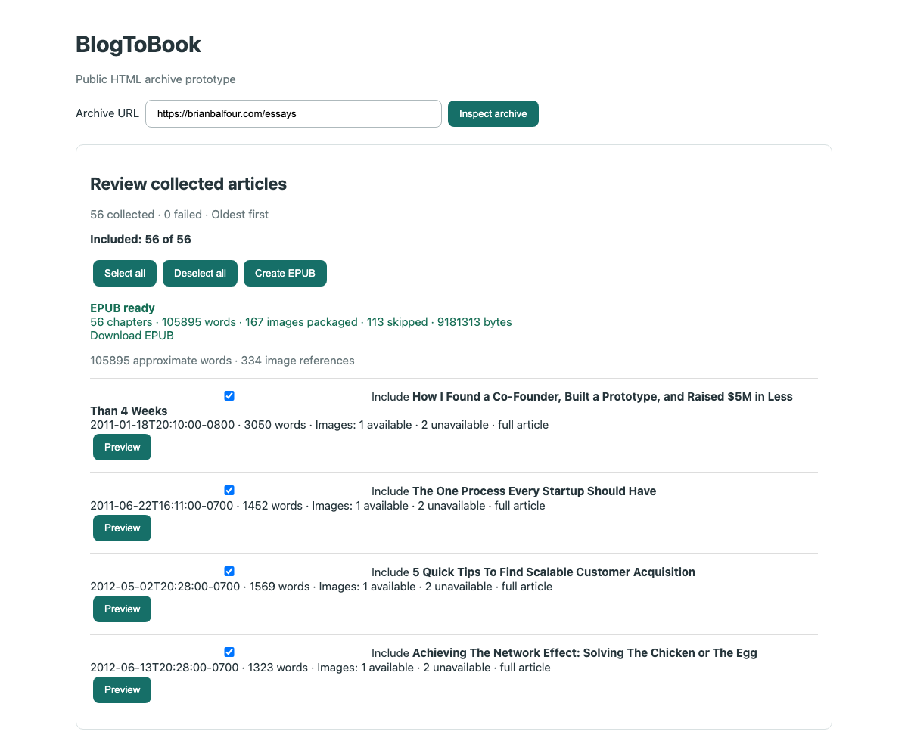

From public archive to EPUB
BlogToBook is built for the archives you already want to read: collect the public posts, check the selection, then take one book with you.
56 articles105,895 words56 chaptersOffline EPUB
Paste archive → Inspect → Collect → Review → EPUB

From archive to e-reader
- Paste the public blog or archive URL you already want to read.
- BlogToBook inspects and collects the public articles.
- Review titles, dates, previews, and selection.
- Export one chronological EPUB for Apple Books, Kindle, or another reader.
Chronological collection
Follow public archive structures and preserve reading order.
Review before export
Inspect titles, dates, previews, and selection before making the book.
Offline reading
Package safely available images into a local EPUB.
Web or Mac
Try the hosted beta instantly, or keep a self-contained app on your Apple Silicon Mac.
Early access, honestly scoped
Designed for public blog, newsletter, and archive URLs—not generic creator homepages. Archive completeness depends on what a source exposes publicly; some sites may restrict automated access or be only partially discoverable. Compatibility will continue improving.